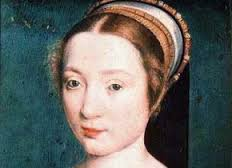
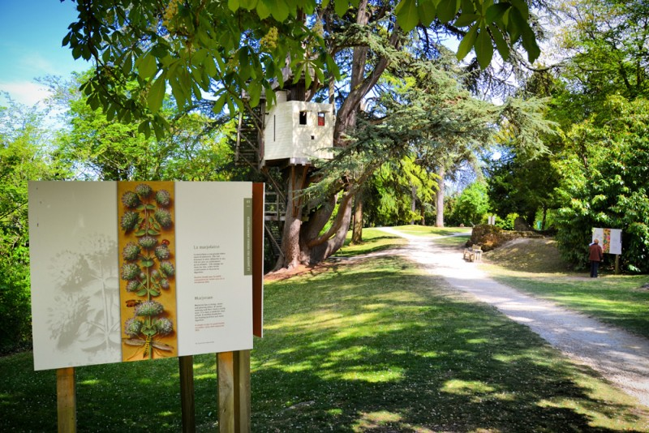

Langeais
Un peu d'histoire
En 1465, Louis XI ordonne la reconstruction du château, en contrebas des vestiges de l'ancien édifice; les travaux sont menés sous la direction de Jean Bourré, trésorier de France et ami du roi, et Jean Briçonnet. Le nouveau château de Langeais est achevé en 1469. L'événement le plus marquant de la vie du château est le mariage royal de Charles VIII avec Anne de Bretagne, célébré le 6 décembre 1491 à 7 heures du matin. La jeune duchesse n'avait alors que 14 ans et son mariage signe la fin de l'indépendance du duché de Bretagne.
Charles VIII

Charles VIII ou Charles VIII l'Affable, né le 30 juin 1470 au château d'Amboise, mort le 7 avril 1498 au même endroit, est roi de France de 1483 à 1498. Seul fils de Louis XI et de sa deuxième épouse Charlotte de Savoie à ne pas être mort en bas âge, il est le septième et dernier roi de la succession directe de la branche des Valois de la dynastie capétienne. Devenu roi à l'âge de treize ans, il fut placé sous la tutelle de sa sœur Anne de Beaujeu, régente de France. À vingt-et-un ans (en 1491), il se marie à Anne de Bretagne, préparant ainsi l'union du duché de Bretagne au royaume de France. Son règne vit la perte du comté d'Artois, du comté de Bourgogne et du comté de Roussillon annexés par son père Louis XI (1493). Son expédition pour conquérir le royaume de Naples constitue le point de départ des guerres d'Italie (1494).
Anne de Bretagne
Par le mariage de 1491, Anne de Bretagne est reine de France. Son contrat de mariage précise qu’il est conclu « pour assurer la paix entre le duché de Bretagne et le royaume de France ». Il fait de Charles VIII son procureur perpétuel. Le 8 février 1492, Anne est sacrée et couronnée reine de France à Saint-Denis. Elle est la première reine couronnée dans cette basilique
La santé au jardin
Anne de Bretagne appréciait les jardins, et le manuscrit des Grandes Heures avec son herbier magnifiquement illustré en témoigne. Des reproductions grand format de certaines de ces enluminures évoqueront, dans les allées du parc, les propriétés médicinales de plantes incontournables, avec des recettes de médecins et humanistes du Moyen Âge et du début de la Renaissance